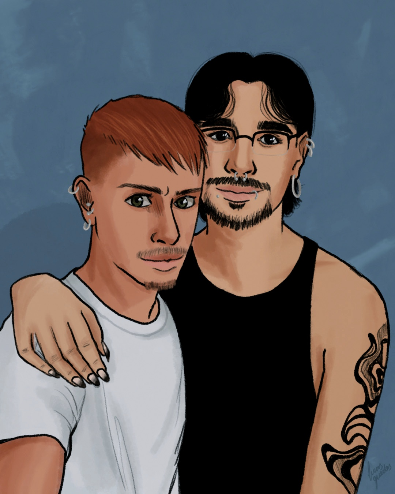

me senti amado pela primeira vez e estranhei.
achei que fosse truque, que no meio do carinho viria a cobrança.
mas não.
ele me tocou e não quis nada em troca.
me olhou como se eu não precisasse provar nada.
a dança dele tem um tipo de feitiço, um movimento que bagunça o ar e me deixa tonto.
mas não quero cura. quero a febre.
não é só beleza, é presença.
uma energia que chega antes dele.
um arrepio que me percorre mesmo quando ele está longe.
e eu, que sempre fui o tipo que se protegía de tudo, me pego querendo ser eletrocutado.
sem luvas, sem defesa.
só o choque bom de alguém que chegou e ficou.
nos encontramos por acaso, mas o jeito que ele me olha carrega décadas.
como se a gente se reconhecesse de uma lembrança que não é daqui.
tem toque que parece casa, tem silêncio que preenche.
e eu, que sempre tive medo de ser muito, dessa vez quero ser inteiro.
não sei onde isso vai dar,
mas se for pra me perder, que seja no caminho até ele.